本章节介绍离线资源的使用，包括离线资源的下载、打包、上传、删除以及更新等功能。
离线资源分为普通资源和插件资源两种类型：
普通资源以单个文件的形式存在，比如单个图片，单个txt文件等。
插件资源以一个功能集合(如一个channel)为单位被打包，通常为zip包，它可能包含Lua脚本、HTML页面等多个元素。
业务频道的打包下载须在管理后台完成。进入EMP管理后台，选择业务频道管理菜单下的管理业务频道子菜单，界面如下：
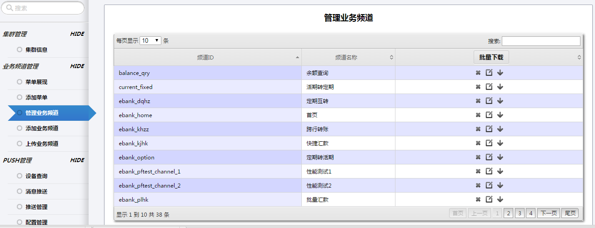
我们可以看到app的各个业务频道的列表。
单个业务频道打包下载的步骤如下：
当选中的只有一个选项时，得到的zip包解压后即为资源文件夹，这种情况下在上传该资源时要当成插件资源上传；
当选中多个选项时，得到的zip包解压后为根据平台和分辨率分类的多个zip包，如下图所示：
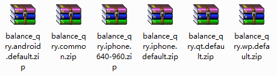
这种情况下在上传该资源时要当成普通资源上传，上传方法会在后面介绍。
若要对多个业务频道进行打包，直接在管理业务频道页面中选择【批量下载】，勾选所需业务频道填写文件名进行下载即可，如下图所示：
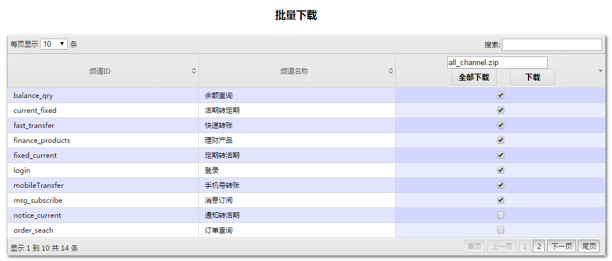
若要将所有业务频道打包，选择【批量下载】【全部下载】即可。
普通资源使用脚本打包。
在后台终端中，进入到脚本文件夹下：
若ewp为rpm包，则文件目录为/usr/local/lib/ewp/bin
若ewp为源码，则文件目录为ewp/bin
接着输入 ./channel_adapter，会提示三个选项：
[root@tracvm ~]# cd /usr/local/lib/ewp/bin
[root@tracvm bin]# ./channel_adapter
Please select the util, dafault is import:
1) import
2) package
3) batch_package
package选项会将普通资源按不同平台和分辨率分别打包；
batch_package选项为批量打包，即将package选项所得的资源包汇总打包成一个zip包。
根据需要选择所需的选项，如输入2，终端提示如下：
You have selected function: package
----------------------------------------------------
Create channel common resource package: Start!
----------------------------------------------------
Please enter the the app dirs:
接着输入当前app的目录，如果是服务器上应该为/var/www/apps/ebank，终端提示输入资源包要存放的地址：
/mnt/hgfs/bank-demo5.2/ebank
Input app dir: /mnt/hgfs/bank-demo5.2/ebank
----------------------------------------------------
Please enter the the dest dirs (default ./):
输入资源包要存放的地址(默认为当前目录)，之后便会开始打包：
Please enter the the dest dirs (default ./):
/mnt/hgfs/bank-demo5.2/ebank/public/test
Dest dir: /mnt/hgfs/bank-demo5.2/ebank/public/test
----------------------------------------------------
args:--[{root,["/usr/lib64/erlang"]},
{progname,["erl"]},
{home,["/root"]},
{pa,["/usr/local/lib/ewp/ebin"]},
{sname,["common_package"]},
{app_dir,["/mnt/hgfs/bank-demo5.2/ebank"]},
{dest_dir,["/mnt/hgfs/bank-demo5.2/ebank/public/test"]},
{package_mod,["default_mod"]},
{noshell,[]}]
=INFO REPORT==== 5-Feb-2015::13:46:55 ===
admin_package_resource:256 success to create common resource zip file."/mnt/hgfs/bank-demo5.2/ebank/public/test/package.android.default.zip"
=INFO REPORT==== 5-Feb-2015::13:46:56 ===
admin_package_resource:256 success to create common resource zip file."/mnt/hgfs/bank-demo5.2/ebank/public/test/package.iphone.640-960.zip"
=INFO REPORT==== 5-Feb-2015::13:46:57 ===
admin_package_resource:256 success to create common resource zip file."/mnt/hgfs/bank-demo5.2/ebank/public/test/package.iphone.default.zip"
=INFO REPORT==== 5-Feb-2015::13:46:58 ===
admin_package_resource:256 success to create common resource zip file."/mnt/hgfs/bank-demo5.2/ebank/public/test/package.qt.default.zip"
=INFO REPORT==== 5-Feb-2015::13:46:59 ===
admin_package_resource:256 success to create common resource zip file."/mnt/hgfs/bank-demo5.2/ebank/public/test/package.wp.default.zip"
[root@tracvm bin]#
这样我们会得到n个以不同平台不同分辨率分类的zip包，打好的包会存放在之前输入的目录下。
如下图所示为得到的zip包：
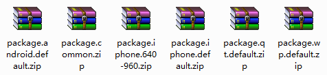
若我们选择批量打包选项batch_package，打包方法与package选项相同，最后只得到一个zip包，包含package打包得到的所有资源包。
在管理后台中，进入资源管理菜单下的离线存储页面，找到"离线资源上传"功能模块，界面如图所示:
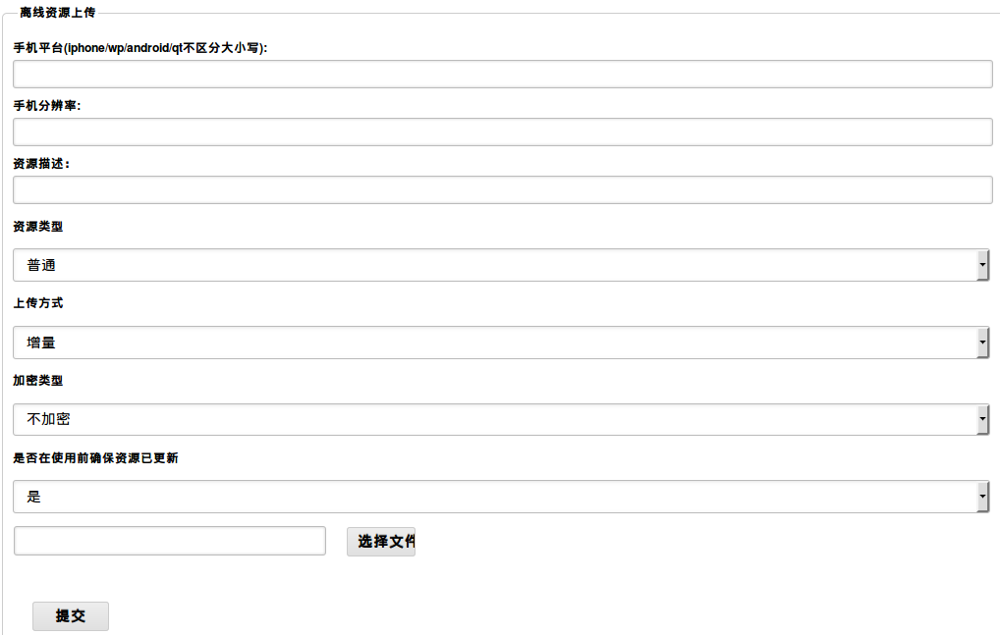
各表单项含义如下：
若所选资源类型为插件资源，则会多出"下载类型"选项，如下图所示：
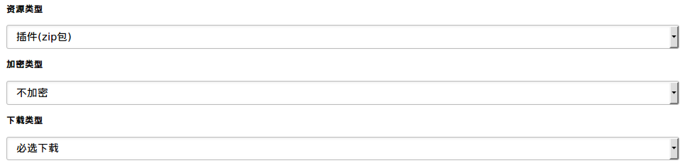
"下载类型"选项有"可选下载"和"必选下载"两项：
完成表单后点击【提交】按钮，系统会根据所填项将资源放在相应的目录下。标准银行中离线资源保存的路径为
ebank/public/www/resources/，该目录结构下会按照平台生成不同的文件夹，每个平台文件夹下会生成分辨率文件夹，对应文件夹下为上传的资源文件。
离线存储的资源文件按照如下结构存储：
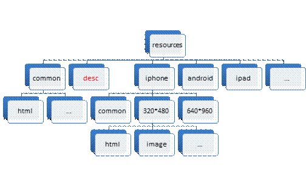
解释：
如果完整填写平台信息，分辨率信息，资源类型，进行上传离线资源文件，会在 resources 文件夹下生成平台文件夹/分辨率文件夹/文件类型文件夹/资源文件。若上传的资源类型不是普通文件，而是插件类型，文件类型文件夹为"zip"，"zip"文件夹下为不自动解压的zip文件。
如果完整填写平台信息，不填写分辨率信息，填写资源类型，进行上传离线资源文件，会在 resources 文件夹下生成平台文件夹/common文件夹/文件类型文件夹/资源文件。若上传的资源类型不是普通文件，而是插件类型，文件类型文件夹为"zip"，"zip"文件夹下为不自动解压的zip文件。
如果不填写平台信息，无论是否填写分辨率信息，填写资源类型，进行上传离线资源文件，会在 resources 文件夹下生成common通用文件夹/文件类型文件夹/资源文件。若上传的资源类型不是普通文件，而是插件类型，文件类型文件夹为"zip"，"zip"文件夹下为不自动解压的zip文件。此处没有分辨率文件夹。
如果上传的是本地H5离线资源，根据页面显示信息，选择填写"资源描述"、"加密类型"、"是否在使用前确保资源已更新"内容即可，上传后，会在 resources 文件夹下生成resources/h5/H5离线资源文件，h5文件夹内存放所有本地H5普通离线资源。
平台、分辨率只会影响EWP类型的离线资源。
如果没有输入平台，则该资源作为通用资源，所有平台的客户端都可以使用；
如果有平台没有分辨率，则该资源作为该平台下的通用资源，该平台下的所有分辨率的客户端都可以使用。
EMP5.3完整版实现后，追加离线资源的上传方式的种类，具体如下。
资源类型和上传方式两个选项组合成上传离线资源的方法。资源类型：普通、插件(zip包)、插件(文件)-增量、H5普通资源(zip包)、H5普通资源(文件)、H5插件(zip包)、H5插件(文件)-增量 上传方式：增量、全量若上传的为插件资源，在对应分辨率文件夹下生成"zip"文件夹，上传后系统会对zip包进行解压，并过滤掉压缩包中的空文件，文件夹内存放上传的压缩包和解压缩后的内容;
若上传的为普通资源：如果是单个文件上传，会直接存放在对应的分辨率文件夹内；如果是压缩的zip包，系统会自动解压并将解压后的内容存放到分辨率文件夹下。
若上传的为H5普通资源：如果是单个文件上传，会直接存放在页面输入的相对路径的文件夹内；如果是压缩的zip包，系统会自动解压并将压缩包的内容解压到resources/h5/文件夹下。
若上传的为H5插件资源：如果是单个文件上传，会直接存放在页面输入的相对路径的文件夹内；如果是压缩的zip包，系统会自动解压并将压缩包的内容解压到resources/h5_plugins/文件夹下。
当手机客户端程序运行时，会从对应平台，分辨率下获取相应的资源文件。
上传某平台某分辨率的离线资源后，会生成对应的描述文件，当运行客户端时，客户端会和描述文件进行比对，如果客户端本地的离线资源与服务器上的离线资源不同，就会提示客户端有新的离线资源需要下载，用户可以选择更新或取消，如果取消离线资源更新，将使用客户端本地旧资源，如果更新离线资源，客户端将使用更新后的离线资源。在标准银行中，离线资源的描述文件存放在ebank/public/www/resources/desc目录下。
单个文件归属于普通资源，在上传时选择资源类型为普通。
举例若我们需要上传一张图片，此图片仅供分辨率为320*480的iphone手机使用，则按照下图填写表单：
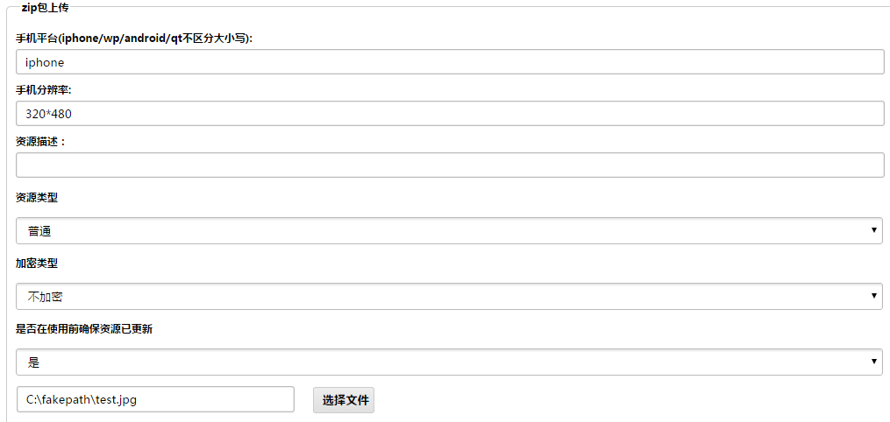
点击【提交】按钮，上传后图片会存储在resources\iphone\320-480\jpg\目录下。
若上传的图片供iphone平台所有分辨率的设备使用，则分辨率不用填，上传后图片会存储在resources\iphone\common\jpg\目录下。
若上传的图片可供所有平台使用，则平台和分辨率都不用填，上传后图片会存储在resources\common\jpg\目录下。
前面我们介绍过普通资源的打包方法，得到的zip包包含了app所用到的所有普通资源，要上传这样的普通资源包，只需要将资源类型选择为普通，上传zip包即可。上传后系统会自动解压压缩包将各资源文件分类分入文件夹下。
前面我们介绍过业务频道打包的几种情况，得到的zip包不同上传时选择的资源类型不同。当zip包只包含某个业务频道某一个平台某种分辨率的资源时，选择插件资源上传，其他情况选择普通资源上传。
简单来说，就是：
上传后的资源以zip包形式存在，放在相应平台和分辨率文件夹下的zip文件夹中。
当以插件类型上传业务频道资源包时，下载类型选择"必选下载"。
下图所示为上传"余额查询"频道适用于安卓平台默认分辨率的资源包：
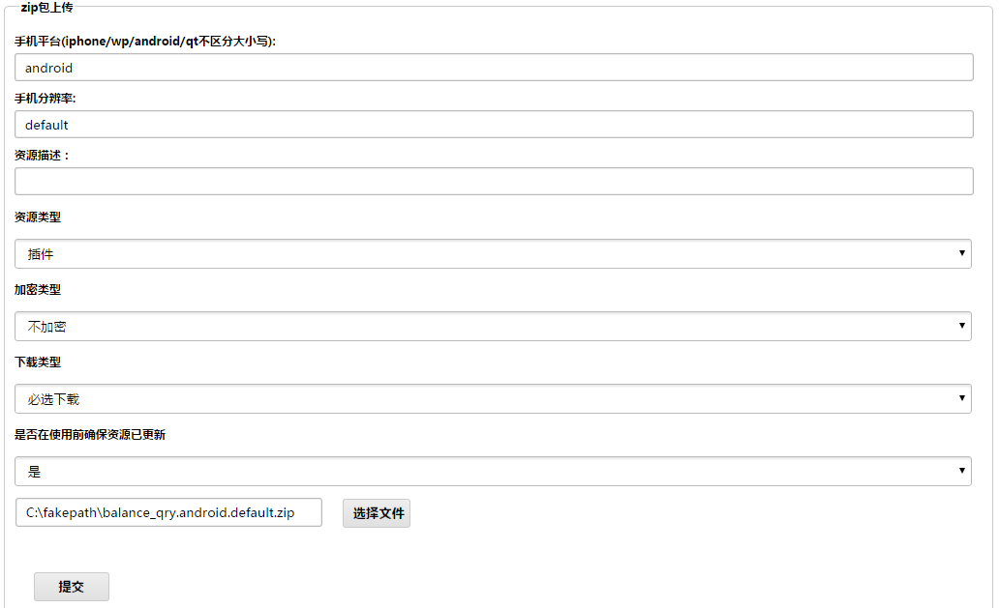
下图所示为上传"余额查询"频道所有资源的zip包：
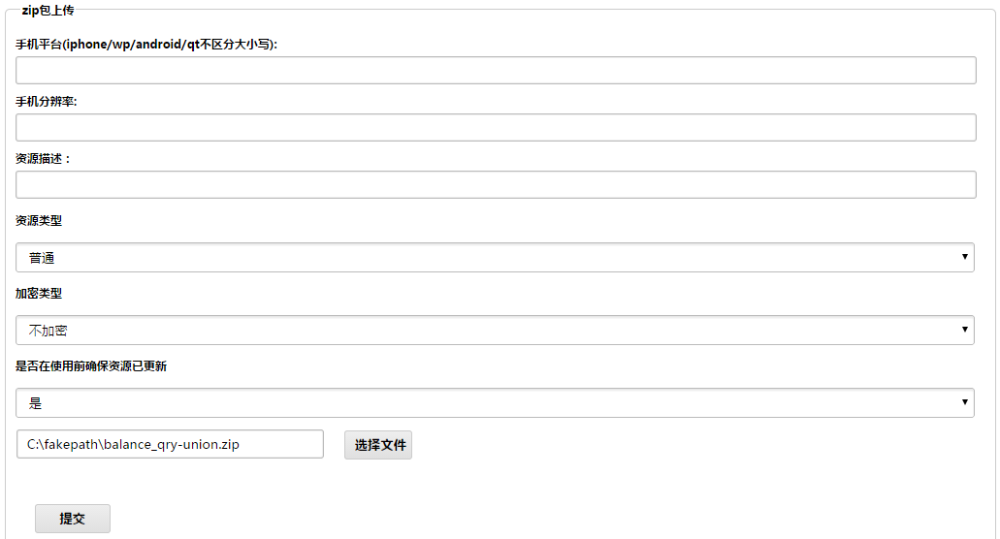
类似标准银行中非基础业务页面中的股票咨询和天气预报频道归属于可选插件资源，需要用户主动发起下载动作。上传可选插件包时，选择资源类型插件资源，并选择下载类型为可选下载，如下图：
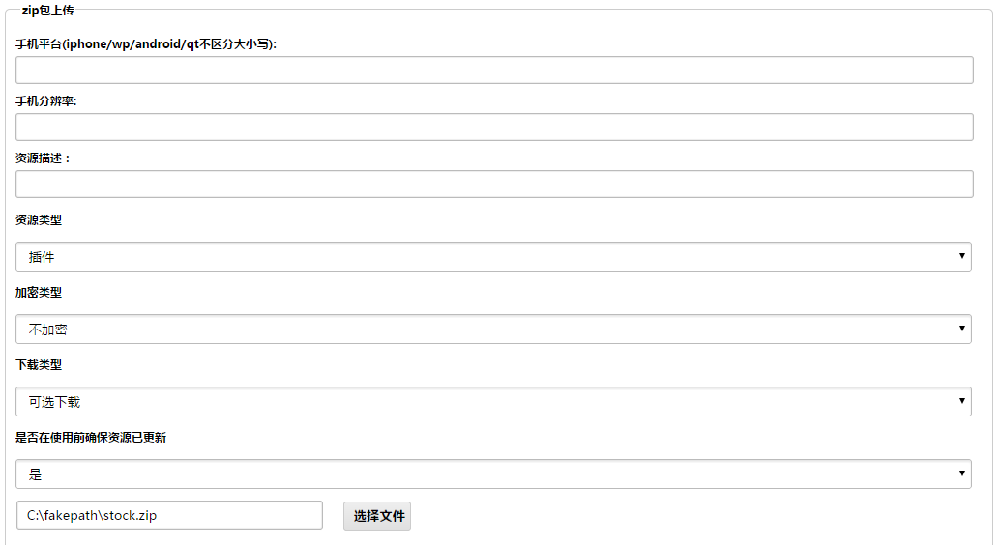
上传后该资源会存储在resources\common\zip\目录下，以zip包形式存在。
H5普通离线资源支持单个文件和批量两种方式上传。单个文件上传时，要指定上传的相对路径，即应该在resources/h5/文件夹所存放的位置，如下图：
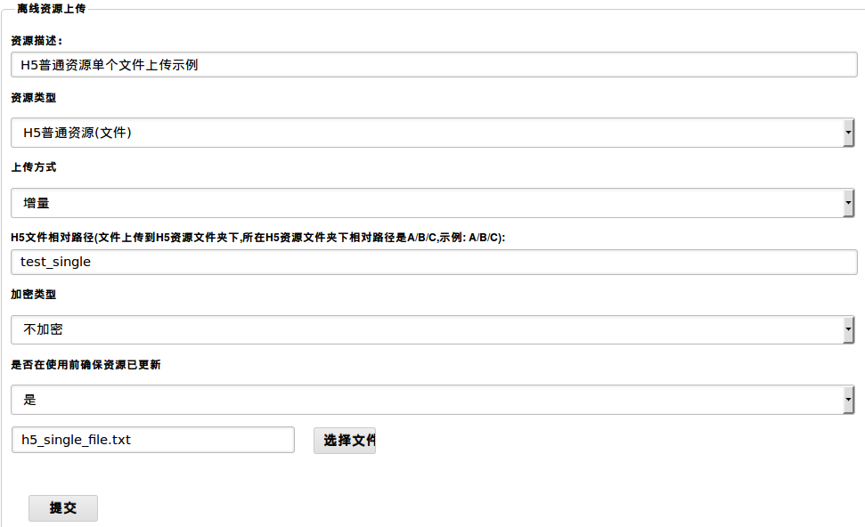
上传的单个文件，保存在路径结构为：resources/h5/test_single/h5_single_file.txt。
批量上传时，将想要上传的内容按照开发时的路径结构，压缩成一个zip包，选择上传即可，保存在服务器的路径为resources/h5/*，*表示zip下的路径结构，如下图：
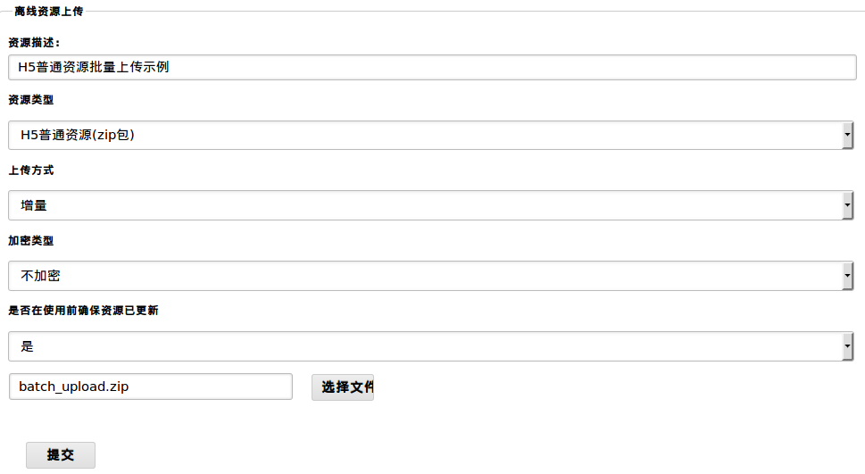
上传之后的路径结构，如下图：
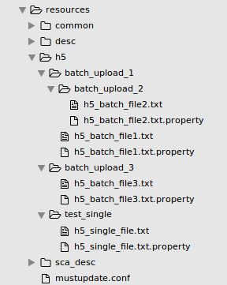
H5插件离线资源支持插件包、插件包单个文件和批量插件包方式上传。
上传H5插件包，选择H5插件(zip包)，系统将插件包保存到resources/h5_plugins/路径下。
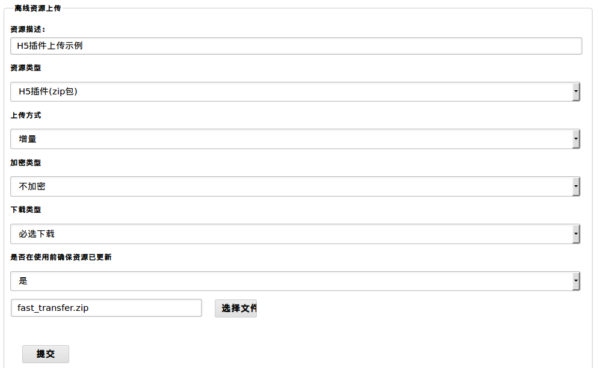
上传插件包单个文件，将图中的aaaa_01.txt，上传到在resources/h5_plugins/fast_transfer/test文件夹下，如下图：
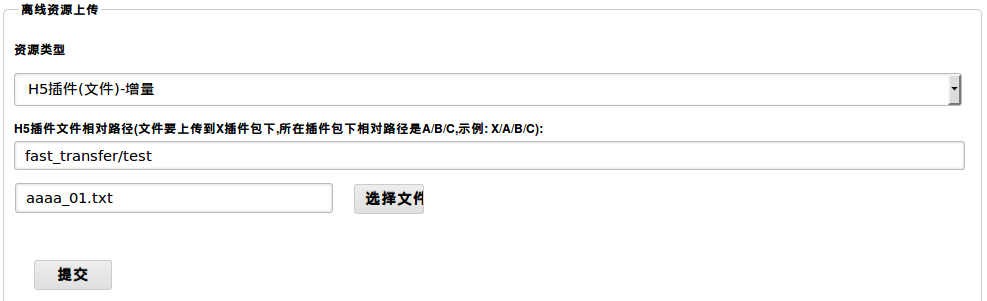
上传批量H5插件包时，选择H5普通资源(zip包)，系统会将batch_upload.zip内所有的插件包依次解压到resources/h5_plugins/文件夹下，示例如下图：
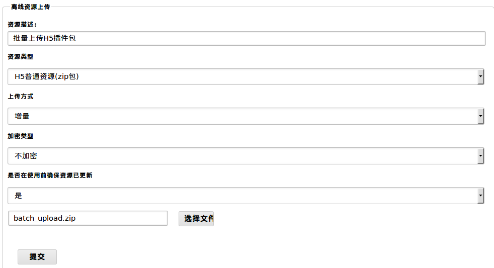
如下图所示，在离线存储页面可以看到所有已上传的离线资源列表：
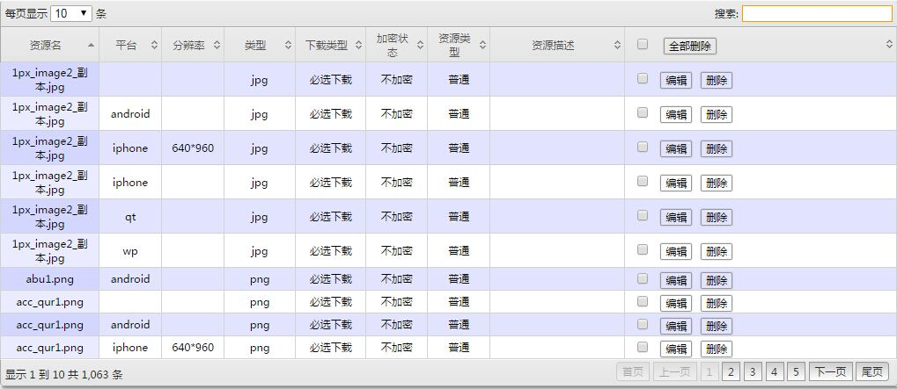
使用资源名、平台、分辨率、类型等字段可以对资源进行搜索，点击表头每个字段旁边的箭头按钮可以根据该字段对资源排序。
点击【编辑】按钮可以修改资源信息，界面如下图：
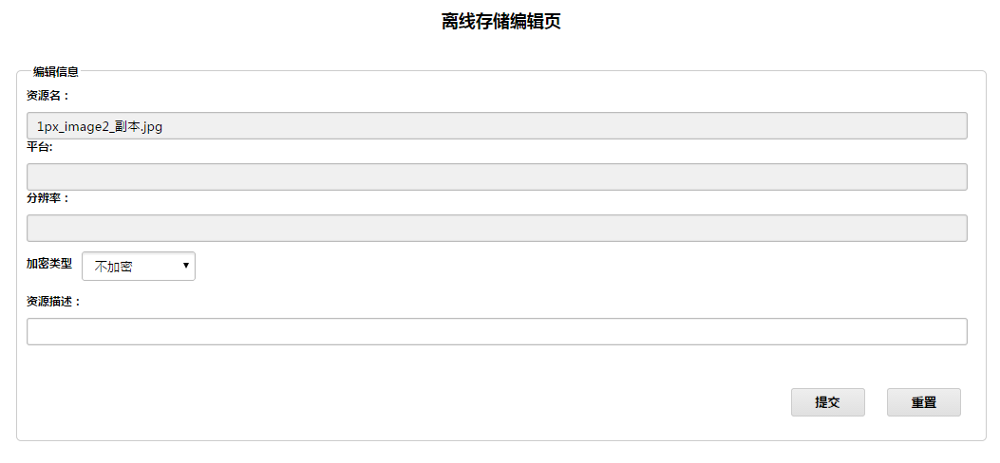
点击【删除】按钮可以删除单个资源。
勾选多个资源并点击【全部删除】按钮可以同时删除多个资源。
勾选【全部删除】按钮旁的选择框可以选中全部资源，再点击【全部删除】按钮删除所有的离线资源。
我们也可以通过删除resource文件夹下的对应文件删除相应的离线资源。
在离线存储页面中，可以找到"离线资源强制更新"的配置选项，它包括两个选项:
前面在讲插件资源的上传时，有提到过插件资源的下载类型选项:
| 版本号 | 日期 | 作者 | 描述 |
|---|---|---|---|
| v1.0 | - | - | 初稿 |
| v1.1 | 2015.12.18 | 于鑫(yu.xin1) | 追加EWP Server H5插件上传的使用说明 |